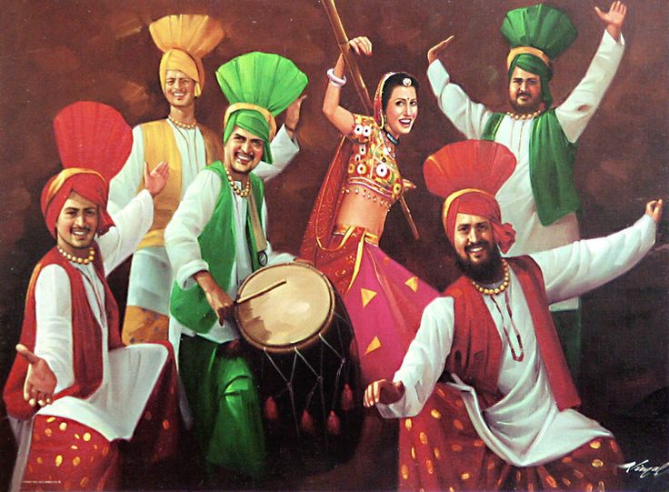
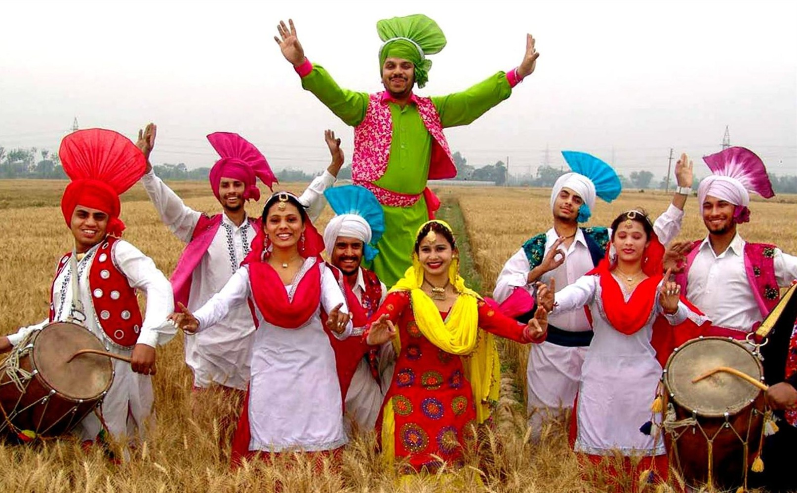
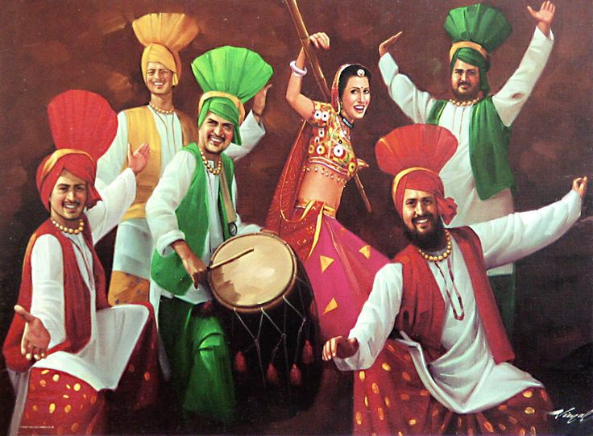
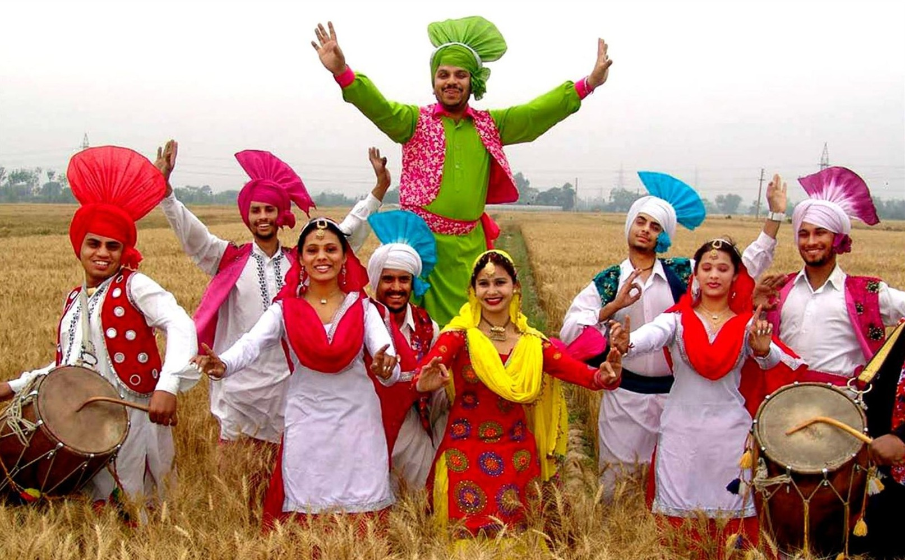

Punjab is a state in northern India. Forming part of the larger Punjab region of the Indian subcontinent, the state is bordered by the Indian states of Jammu and Kashmir to the north, Himachal Pradesh to the east, Haryana to the south and southeast, Rajasthan to the southwest, and the Pakistani province of Punjab to the west. The state covers an area of 50,362 square kilometres, 1.53% of India's total geographical area. It is the 20th-largest Indian state by area. With 27,704,236 inhabitants at the 2011 census, Punjab is the 16th-largest state by population, comprising 22 districts. Punjabi is the most widely spoken and official language of the state. The main ethnic group are the Punjabis, with Sikhs (58%) and Hindus (38%). The state capital is Chandigarh, a Union Territory and also the capital of the neighbouring state of Haryana. The five tributary rivers of the Indus River from which the region took its name are Sutlej, Ravi, Beas, Chenab and Jhelum Rivers; Sutlej, Ravi and Beas are part of the Indian Punjab.
 
The cuisine of Punjab has great variety of mouth-watering vegetarian as well as non vegetarian dishes. In Punjab, home cooking is different from the restaurant cooking style. At the restaurants use desi ghee, butter and cream to make the food lip smacking and finger licking. On the other hand, at home, people prefer using sunflower oil or some other refined oil for cooking, with the basic idea of making the food low in fat content. The main Traditional Punjabi food are - Sarson ka saag, Shahi paneer, Dal makhni, Rajma, Chole, Aloo, Chicken karahi, Chicken Tandori, makki di Roti, Naan, Phulka, Puri, Papad, Lassi, Kheer, rabri.
The traditional dress of people is Kurta-pyjama with turban for men. Women prefer Patiala suits as part of their traditional attire. There is a riot of colors in the pagdi-turban and phulkari dupattas, that comes out during the Baisakhi festival. The traditional dress of the Punjabis comprising of the salwar-kameez for women and lehenga-kurta with a waistcoast has many colors and styling. Turban styles can be explored and is compulsory for all Sikhs.